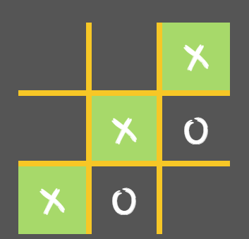
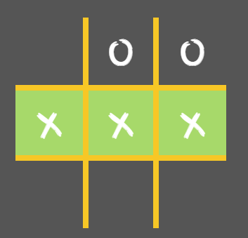
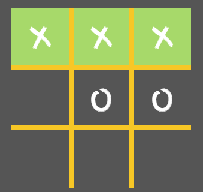

Take turns marking "X" and "O", bear in mind the objective of Tic-Tac-Toe is to have three of your symbols make a straight line. The line can go sideways, up and down, or diagonally. The first player to make a straight line with three of their symbols wins! If nobody has a straight line of three symbols when the grid is filled, it's a tie!
These are examples of a winning screen:
  "X" Always starts. To know the correct turn look for the glowing box which will show whoose turn is it.